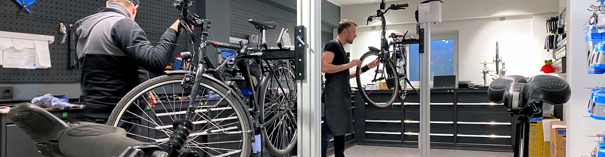

In unserer TÜV zertifizierten Qualitätswerkstatt finden Sie fachkundige Ansprechpartner für Ihre Reparaturen und Inspektionen, damit Sie mit Ihrem Biobike/E-Bike immer sicher und komfortabel unterwegs sind. Wir sind sehr gerne für Sie da und stecken viel Energie in die Schulung unseres Teams sowie die technische Ausstattung unserer Werkplätze. Wer meint, als Zweiradmechatroniker wechselt man den ganzen Tag nur Schläuche, darf sich hier vom Gegenteil überzeugen. Unsere Arbeitsplätze sind allesamt mit Laptops ausgestattet, um die hochmodernen E-Bikes professionell warten zu können.
| Inspektion | E-Bike Inspektion | Reparaturen |
|---|---|---|
| Wir überprüfen alle wichtigen Funktionen und sorgen durch professionelle Pflege für eine längere Lebensdauer Ihres Fahrrads. Dazu gehört: Prüfen und Einstellen der Bremsen, Schaltung, Lichtanlage und des Reifenluftdrucks / Prüfen der Kette / Schmieren der beweglichen Teile. | Zusätzlich zu den Prüf- und Pflegeleistungen der normalen Fahrrad-Inspektion überprüfen wir den Motor und den Akku des E-Bikes und erstellen ein Prüfprotokoll (vom Hersteller abhängig). Für viele namhafte E-Bike Hersteller haben wir entsprechende Prüfgeräte vor Ort. | Gemeinsam schauen wir uns an, was an Ihrem BioBike oder E-Bike zu reparieren ist und welche Teile wir dafür brauchen. Dafür planen wir gerne etwas Zeit ein, damit wir Ihnen in Ruhe eine Auskunft über den Umfang und Zeitrahmen des Reparaturauftrags geben können. Vereinbaren Sie gerne online einen Termin. |